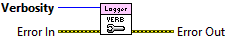

Verbosity determines whether to prompt a user with an error dialog for an error handled with the Catch Error VI based on the error's severity.
Sets the verbosity for displaying an error dialog to a user when using the Catch Error VI for error handling.
A Graphical User Interface (GUI) dialog, or prompt, is displayed if the severity of the error is equal to or less than the verbosity. Generally a verbosity of zero (0) disables all error dialogs, while a verbosity of four (4) will display an error dialog for any severity. There are four possible severities for an error using the Catch Error.vi: (1) FATAL, (2) RECOVERABLE, (3) WARNING, and (4) BENIGN. FATAL errors are logged at the FATAL level, RECOVERABLE errors are logged at the ERROR level, WARNING errors are logged at the INFO level, and BENIGN errors are logged at the DEBUG level.
Any errors handled with the Catch Error.vi are logged to the default log file depending the configured Level. The verbosity is only used to determine if an error dialog should be displayed based on the severity of the error handled by the Catch Error.vi node.

|
|
Verbosity determines whether to prompt a user with an error dialog for an error handled with the Catch Error VI based on the error's severity. |
|
|
Error In describes error conditions that occur before this node runs. This input provides standard error in functionality. |
|
|
Error Out contains error information. This output provides standard error out functionality. |